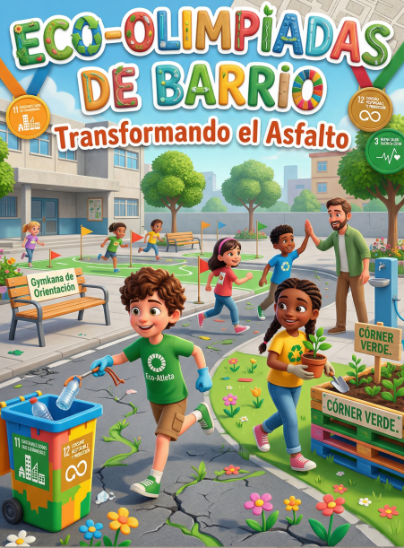

Eco-Olimpiadas de Barrio: Transformando el Asfalto
Objetivos de Desarrollo Sostenible (ODS)
El proyecto incide principalmente en dos ODS:
- ODS 11: Ciudades y comunidades sostenibles: Necesario porque se prevé una alta urbanización. Las ciudades necesitan espacios más verdes, inclusivos y seguros, combatiendo la "desconexión de los jóvenes" con el entorno (patio de cemento, falta de naturaleza).
- ODS 3: Salud y Bienestar: Ataca el sedentarismo urbano asegurando que el deporte sea preventivo y promovedor de calidad de vida.
Descripción del Proyecto
Es un evento deportivo de tres días dirigido a alumnos de 5º/6º de Primaria y 1º de ESO (10-13 años). La clave de este evento es que la puntuación de los equipos no depende exclusivamente del resultado físico, sino también de acciones de limpieza y mejora del entorno urbano y escolar.
Actividades Centrales
- Gymkana de orientación urbana y deporte.
- Retos de "Plogging" (combinación de carrera y recogida de residuos).
- Diseño participativo y plantación de "Córners Verdes" dentro del propio centro escolar.
Alineación Educativa: El proyecto responde directamente a la LOMLOE usando la metodología del Aprendizaje-Servicio (ApS): los alumnos aprenden técnica de carrera y orientación mientras prestan un servicio social visible a la comunidad.
Impacto Esperado
Busca mejorar la limpieza del entorno escolar, aumentar los niveles de actividad física diaria entre jóvenes y, de forma crucial, generar un sentido de pertenencia. Requiere pocos recursos económicos pero sí esfuerzo de organización entre el centro, AMPA, la concejalía de limpieza (ayuntamiento) y asociaciones vecinales.